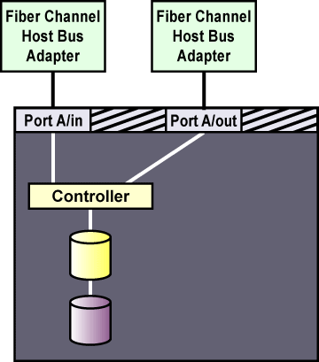

A.2. Setting Up a Fibre Channel Interconnect
Fibre Channel can be used in either single-initiator or multi-initiator configurations.
A single-initiator Fibre Channel interconnect has only one node connected to it. This may provide better host isolation and better performance than a multi-initiator bus. Single-initiator interconnects ensure that each node is protected from disruptions due to the workload, initialization, or repair of the other node.
If employing a RAID array that has multiple host ports, and the RAID array provides simultaneous access to all the shared logical units from the host ports on the storage enclosure, set up single-initiator Fibre Channel interconnects to connect each node to the RAID array. If a logical unit can fail over from one controller to the other, the process must be transparent to the operating system.
Figure A-1 shows a single-controller RAID array with two host ports and the host bus adapters connected directly to the RAID controller, without using Fibre Channel hubs or switches. When using this type of single-initiator Fibre Channel connection, your RAID controller must have a separate host port for each cluster node.

Figure A-1. Single-controller RAID Array Connected to Single-initiator Fibre Channel Interconnects
The external RAID array must have a separate SCSI channel for each cluster node. In clusters with more than two nodes, connect each node to the SCSI channel on the RAID array, using a single-initiator SCSI bus as shown in Figure A-1.
To connect multiple cluster nodes to the same host port on the RAID array, use a Fibre Channel hub or switch. In this case, each host bus adapter is connected to the hub or switch, and the hub or switch is connected to a host port on the RAID controller.
A Fibre Channel hub or switch is also required with a dual-controller RAID array with two host ports on each controller. This configuration is shown in Figure A-2. Additional cluster nodes may be connected to either Fibre Channel hub or switch shown in the diagram. Some RAID arrays include a built-in hub so that each host port is already connected to each of the internal RAID controllers. In this case, an additional external hub or switch may not be needed.